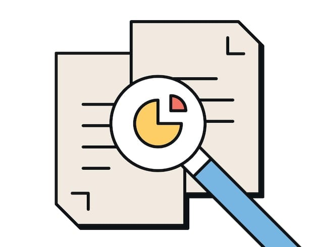

Итог практической работы
Алгоритм работы с контролем версий и исправления ошибок
Изменение
Внесение правок в исходные файлы веб-проекта.
Фиксация
Создание нового commit для сохранения состояния.
История
Просмотр хронологии и сообщений commits.

Сравнение
Поиск отличий между рабочей и ошибочной версиями.
Обнаружение
Точное нахождение источника возникшей ошибки.
Исправление
Внесение корректировок в код и устранение проблемы.
Новая версия
Финальная фиксация исправленного, стабильного проекта.